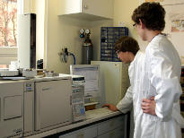
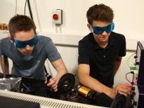
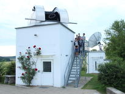

Biologie und Chemie
- Molekularbiologie / Gentechnik
- Mikrobiologie
- Naturstoffchemie
- chem. Synthese und Analytik

Laser, Optik und E-Physiologie
- Elektronenmikroskopie
- Laserphysik (inkl. Holografie)
- Elektrophysiologie
- Spektralphotometrie / Fluorometrie

Hans-Haffner-Sternwarte
- Astrofotografie
- Sternenbeobachtung
- Spektroskopie
- Photometrie
Herzlich Willkommen
Subline über mehrere Zeilen sodass man die Seite kurz einleiten kann
Fließtext. Eingebettet in das F-K-G ist die Entfaltung der Persönlichkeit der Schülerinnen und Schüler, die wir in ihrer Individualität bewusst unterstützen und fördern wollen. Es ist unser Ziel, unsere Schülerinnen und Schüler zur verantwortungsvollen Teilnahme am politischen, wirtschaftlichen und gesellschaftlichen Leben zu befähigen.